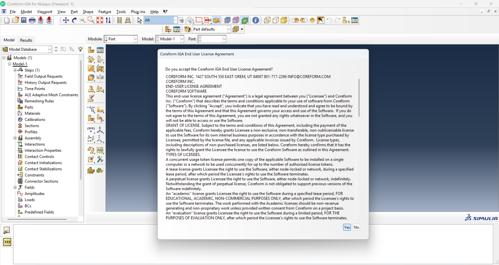
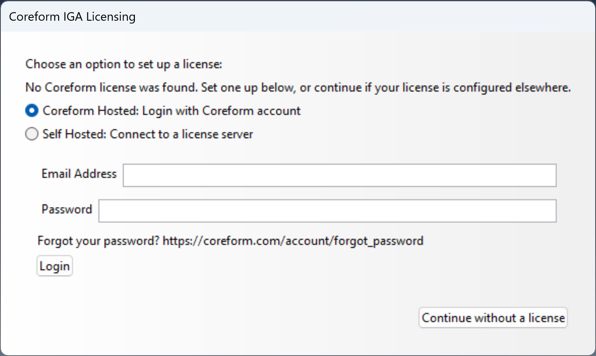
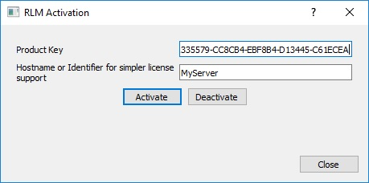
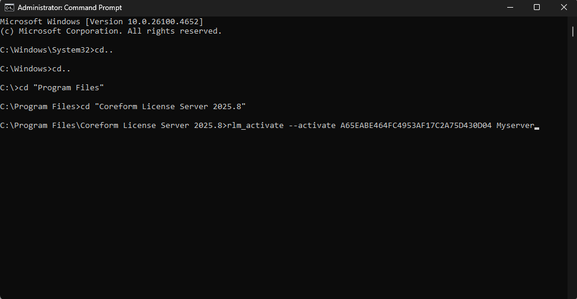
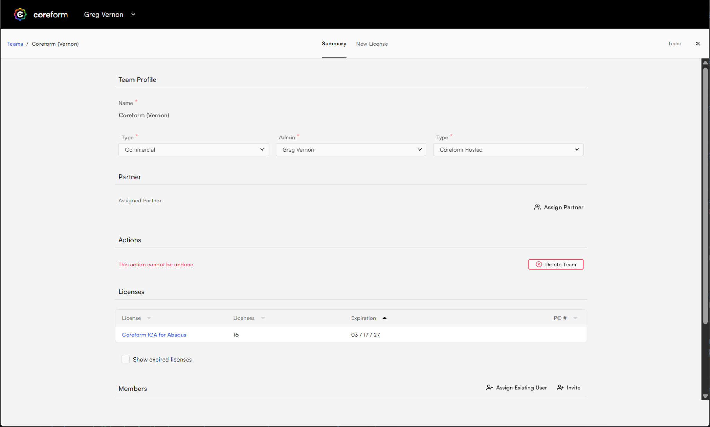
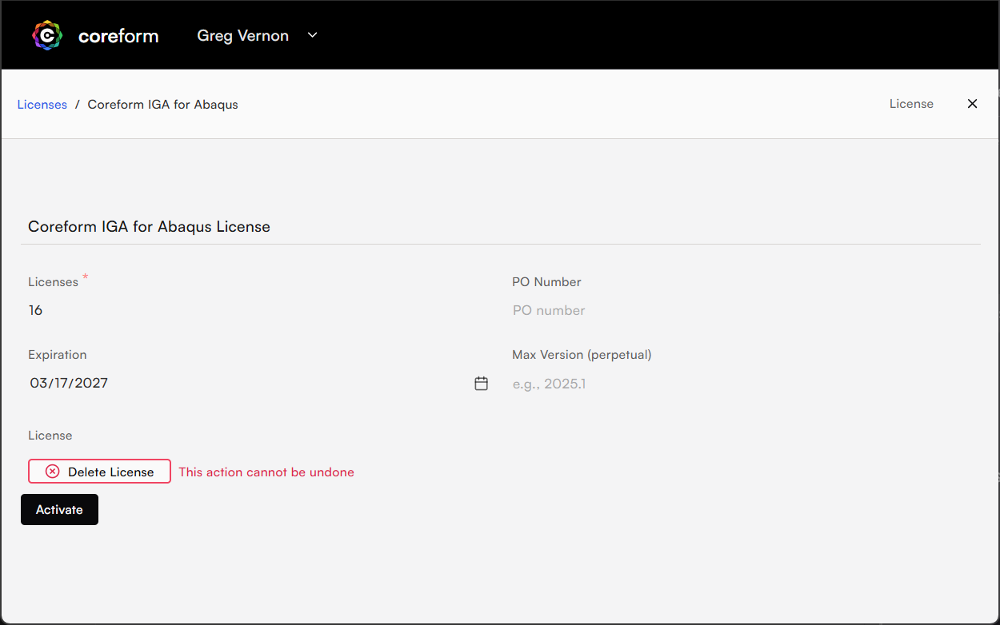
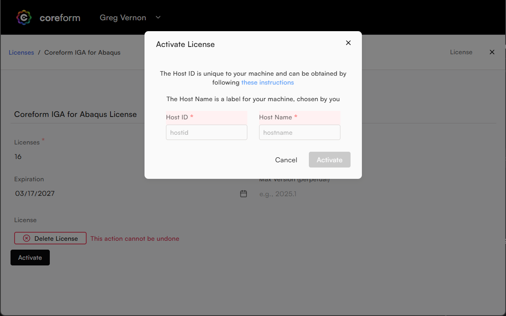
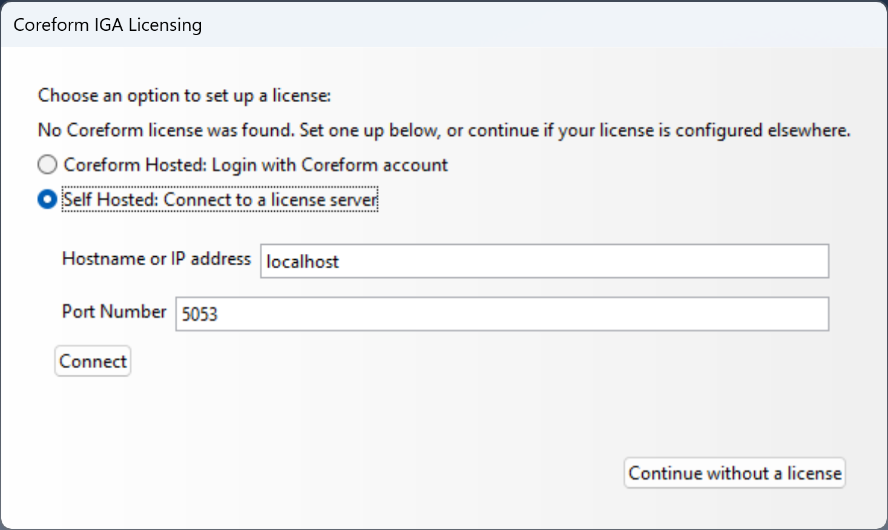

Licensing
Coreform IGA for Abaqus supports two licensing methods, self-hosted and Coreform-hosted.
1 End-User License Agreement (EULA)
The first time you start Coreform IGA for Abaqus, the EULA dialog opens in Abaqus/CAE before licensing is configured. Review the agreement and click Yes to accept it and continue.

After you accept the EULA, the licensing dialog opens and lets you choose one of the methods below.
2 Licensing setup
2.1 Coreform-hosted license
2.1.1 Prerequisites
Many users may find it preferable to use floating licenses hosted by Coreform. There are three requirements to use these licenses:
- That you have a user account on https://coreform.com/account
- If you do not have an account, contact your team’s administrator for Coreform licenses to request an invitation.
- If you need help identifying your team administrator, contact support@coreform.com for assistance.
- Your team needs to have an active license for Coreform IGA for Abaqus.
- The computer(s) running Coreform IGA for Abaqus need to be able to access https://coreform.com. It’s possible that your organization’s firewall blocks connections, such as these. If so:
- You may be able to request adding that URL to the firewall’s “whitelist”.
- If your site has an existing HTTP proxy, which you can access, the script will attempt to use the proxy by searching for the environment variables
HTTP_PROXYorHTTPS_PROXY. - If the above workarounds are not an option for you, you can use the self-hosted licensing approach described below.
2.1.2 Signing-in to your Coreform Account
You sign in from inside Abaqus/CAE. Choose Coreform Hosted, enter the email address and password for your coreform.com account, and click Login.

Your credentials are saved, so later sessions do not prompt again.
You can reopen the dialog at any time from Help → Coreform IGA Licensing….
2.2 Self-hosted license
We strongly recommend the Coreform-hosted floating license option, but recognize that some users will require self-hosting of their floating licenses. If you do use the self-hosted option you will need to do the following.
2.2.1 RLM-Server installation for self-hosted licenses
There are four parts to setting up a self-hosted license:
- Install the RLM-Server software on the machine that will be the license server.
- Activate the floating license on the license server.
- Configure your firewall.
- On each client machine, specify the location of the license server.
NOTE: These instructions assume that you use default paths and port numbers. Please modify the instructions according to actual installation locations and port numbers used.
2.2.1.1 Install the RLM-Server software on the machine that will be the license server
- Pre-installation Setup
- Before installing RLM-Server, choose a computer to use as a license server.
- This computer must be reachable by clients on the internal network.
- This computer does not need to be a dedicated license server.
- It needs to always be on while clients are using licenses.
- You will need your product key for your license found in your Coreform account.
- Before installing RLM-Server, choose a computer to use as a license server.
- Install RLM-Server Software
Run the appropriate RLM-Server installation file. RLM-Server can be downloaded from the Coreform downloads page (see the RLM Server Downloads section).
Platform Filename Default Install Folder Windows RLM-Server-202x.x-Win64.exeC:\Program Files\RLM-ServerLinux RLM-Server-202x.x-Lin64.sh/opt/RLM-ServerRLM-Server-202x.x-Lin64.debRLM-Server-202x.x-Lin64.rpmLinux installation details
- To install RLM-Server on a Linux machine, use either the
su -orsudocommand to elevate to root.
- To install RLM-Server on a Linux machine, use either the
2.2.1.2 Activate the Coreform IGA for Abaqus license
A valid Coreform IGA for Abaqus license file must be placed in the RLM-Server installation folder. The license file can be obtained using an activation utility that communicates with the Coreform server over the Internet, or the license file can be downloaded from your Coreform account.
- Activate over the internet
- Navigate to the RLM-Server installation folder (see table above).
- Activate by using either the GUI or the command line option:
- RLM Activation GUI
Run
rlm_activateto launch the RLM Activate window. Enter the Product Key and Hostname (for identifying your license server on your account). Click Activate.
- Command Line Activation
Run as Administrator (Root):
rlm_activate –activate <product_key> <hostname>, where<product_key>is the product key for the license and<hostname>is the name of the server. The hostname is optional, but will identify the server in your list of licenses in your account page.
- RLM Activation GUI
- Activate locally (without internet)
Open a Command Prompt or terminal window and navigate to the RLM-Server installation folder.
Run:
rlmutil rlmhostid etherto get your server’shostid.On a computer with an Internet connection, go to the Coreform IGA for Abaqus license on your Coreform account page.


Click on the Activate button and enter the Host ID and Host Name for the license server into the pop-up dialog, then click the dialog’s Activate button.

Save the downloaded license file to your RLM-Server installation folder.
2.2.1.3 Configure your firewall
Restart the server to pick up the new license file. This does not require a reboot of the machine. Check to see that the Coreform server is running. In a web browser on the server, type http://localhost:5054/. This should open the Reprise License Server Administration page. In the left column, click Status. You should see three tables. In the ISV Servers table you should see Coreform port 5055 running. If not, click on Reread/Restart Servers in the left column. Check again by clicking Status.
By default, RLM-Server uses tcp:5053 with a web admin interface running on tcp:5054 and an additional port specifically for the Coreform ISV server (tcp:5055). You can edit the port numbers in the license file to fit your needs. For example, if you already have an existing RLM installation for another program that uses port 5055, you can reassign the Coreform port.
If you change port 5053 in the license file on the server, the port listed in the client license file must match the port in the server license file.
With port numbers decided, you can proceed to adjust your firewall for all ports to allow license server traffic.
2.2.1.4 On each client machine, specify the location of the license server
The simplest way is from inside Abaqus/CAE. The licensing dialog opens after you accept the EULA on first launch, and you can reopen it at any time from Help → Coreform IGA Licensing…. Choose Self Hosted, enter your license server’s hostname and port, and click Connect.

The dialog writes a remote.lic to the directories the runtime searches: <user config>/Coreform/licenses/remote.lic and, when writable, <install>/bin/licenses/remote.lic.
You can equally create the file by hand. It must contain exactly these two lines:
HOST <server_address> ANY <port>
ISV csimsoftAny file ending in .lic in either directory is honored, so the name remote.lic is not required. The per-user directory is:
Windows: %LOCALAPPDATA%\Coreform\licenses
Linux: ~/.config/Coreform/licenses2.2.1.5 Licensing every user on a machine
To license all users of a machine at once place the .lic in the install-wide directory instead:
<install>/bin/licenses/The runtime searches the per-user directory first and then the install-wide one, so an individual user’s license still takes precedence.
This applies to self-hosted licensing only. Coreform-hosted credentials are tied to an individual account and cannot be provisioned install-wide.
On a root-owned Linux installation this directory is writable only by root, which is the intended arrangement: an administrator places the .lic and users read it. Do not make it world-writable as anything able to write here can point every user on the machine to a different license server.